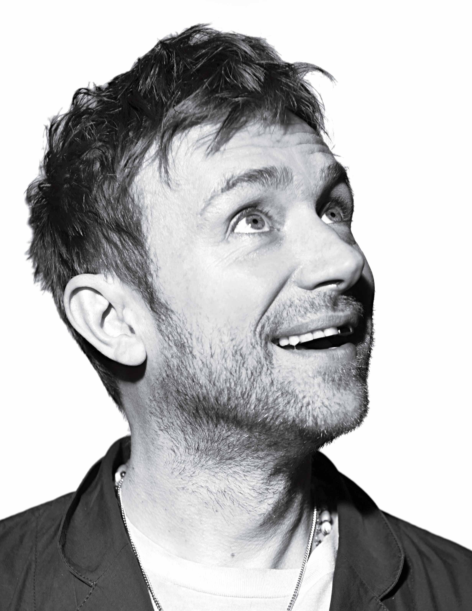
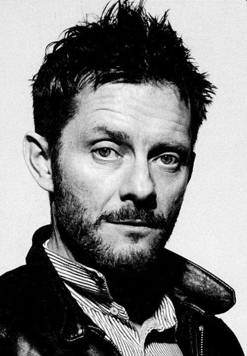

| Name | Bio | Photo |
|---|---|---|
| Damon Albarn | Damon Albarn (born 23 March 1968) is an English musician, singer, songwriter, and record producer, best known as the lead singer and lyricist of the rock band Blur and as the co-founder, lead vocalist, instrumentalist, and primary songwriter of the virtual band Gorillaz. |
 |
| Jamie Hewlett | Jamie Christopher Hewlett (born 3 April 1968) is an English comic creator, animator, designer, illustrator, and director, best known as the co-creator of the comic book Tank Girl and the virtual band Gorillaz, alongside Blur frontman Damon Albarn. |
 |